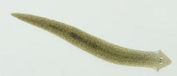
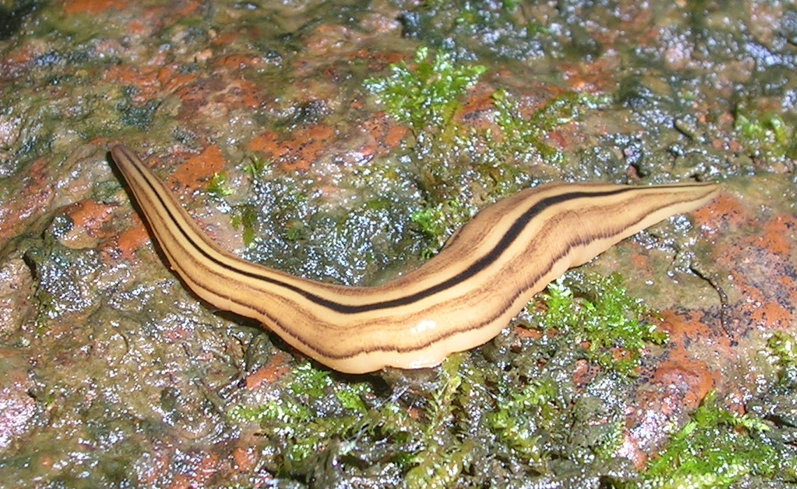
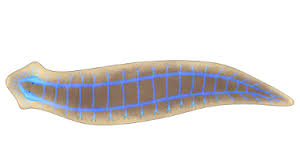
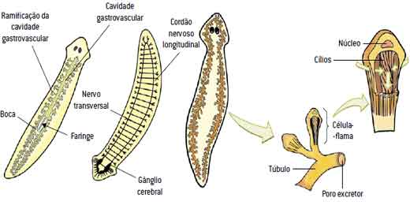
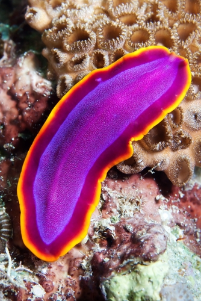
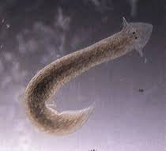

|

Adaptações para o ambiente aquáticos:Informações sobre suas adaptações para o meio aquático |

|

|
|

|
||
|

Informações sobre seu organismoInformações sobre: Sistema respiratório, Sistema circulatório, Sistema nervoso |

|
Reino: Animal |
Filo: Platyhelminthes |
Classe: Podemos identificar quatro classes nesse filo: Turbellaria, Trematoda, Cestoda e Monogenea. |
Ordem: Seriata |
Família: Geoplanidae Stimpson |
Por fazerem parte do Reino Animal, os platelmintos são animais pluricelulares, possuindo várias células capazes de formar tecidos, e são eucariontes, sendo suas células dotadas de organelas celulares e carioteca separando o material genético do restante do conteúdo celular. Além disso, são os primeiros organismos triblásticos a se estabelecerem no planeta, possuindo, assim, três folhetos embrionários (endoderma, mesoderma e ectoderma), que dão origem aos demais tecidos e órgãos do corpo. A presença de mesoderma foi uma importante aquisição evolutiva, pois todo o tecido muscular é oriundo do mesoderma, e isso permitiu que os animais deste filo e de filos subsequentes tivessem melhor locomoção, não mais apresentando organismos sésseis, e sim de vida livre. Ao contrário dos cnidários, os platelmintos possuem simetria bilateral, com seu corpo podendo ser dividido em duas partes iguais e apresentando duas regiões (região posterior e anterior). Embora possuam os três folhetos embrionários, são seres acelomados, não possuindo o celoma, cavidade preenchida com líquido que daria espaço para o crescimento e depósito de órgãos e vísceras.
Os platelmintos podem apresentar vidas livres, sendo encontrados em ambientes aquáticos ou úmidos, ou ainda alojados no interior de outros organismos, atuando como parasitas. São exemplos de platelmintos as tênias e as planárias, assim como outros vermes parasitas, como o Schistosoma causador da esquistossomose.
Os platelmintos podem ser carnívoros ou herbívoros, com algumas espécies parasitas apresentando hábitos onívoros, já que se alimentam da matéria orgânica consumida pelo hospedeiro em que estão. Platelmintos de vida livre se alimentam geralmente de pequenos vermes e organismos invertebrados.
A locomoção dos platelmintos se dá por meio de cílios. Grande parte dos turbelários é ciliada; as espécies maiores movem-se através de cílios com o auxilio de ondulações musculares existentes na parte ventral do corpo. Existe um sistema de glândulas duplas que possibilitam a fixação temporária em diversas espécies.